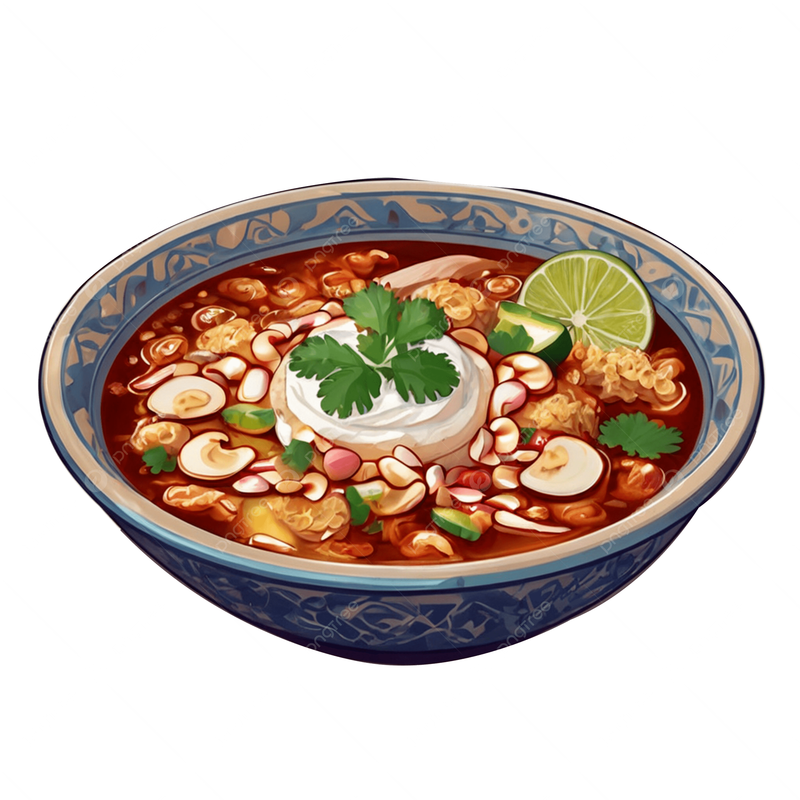
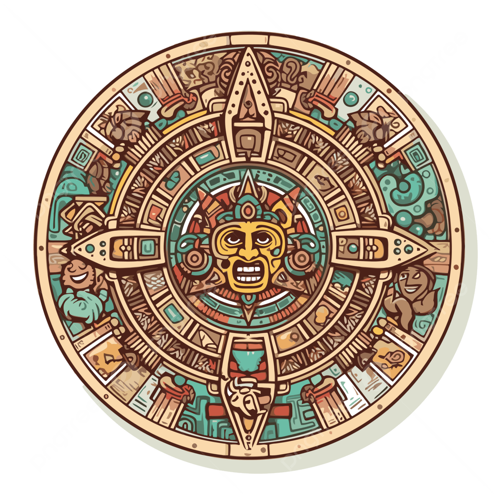

History
What is Pozole?

It is a traditional Mexican dish. It is a stew made from a special corn called cacahuazintle. This corn is large and round. When cooked, it pops and becomes fluffy. Usually includes meat, like pork or chicken. The recipe can change based on the region. However, it always keeps its main flavor. Pozole is perfect for celebrating special occasions. It is especially popular during Mexican Independence Day.
Origin
The origin of pozole dates back to the pre-Hispanic civilizations of Mexico. The Nahuatl word "pozolli," which means "foamy" or "boiled," gives the name "pozole", referring to the corn that cooks until it bursts. This dish was part of religious ceremonies and was originally made with human flesh for ritual sacrifices. With the arrival of the Spanish, this practice changed, substituting human flesh with pork meat.

History of Pozole
During pre-Columbian times, this dish held religious significance and was served at special events. With the arrival of the Spaniards, the recipe transformed, incorporating new ingredients and preparation methods. Over the centuries, it has become a symbol of Mexican gastronomy, cherished throughout the country and abroad.